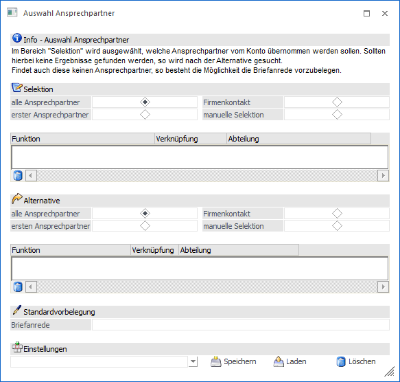
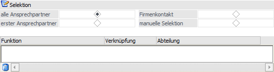
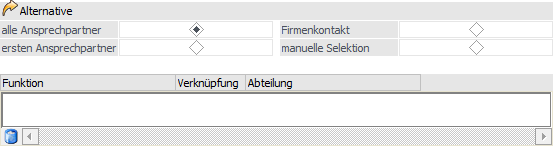
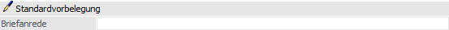
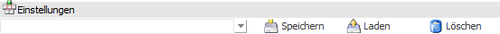
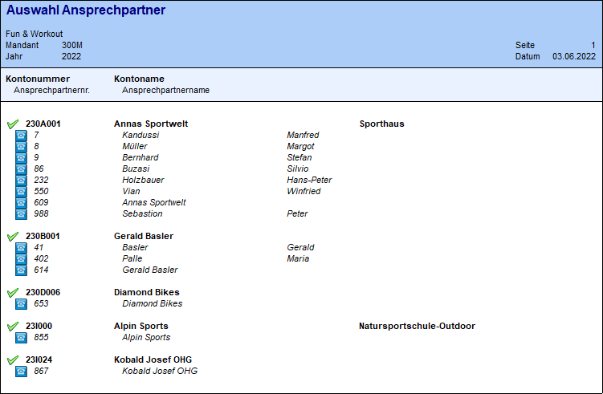

Wenn eine Kampagne erstellt wird, so können in dieser Personenkonten und / oder Interessenten vorhanden sein. Soll nun auf Grundlage solch einer Kampagne z.B. ein Serienbrief erstellt werden, so wird man dabei wahrscheinlich einen bestimmten Ansprechpartner anschrieben wollen und nicht die Firma als solches.
Mit Hilfe des Programms "Auswahl Ansprechpartner", welches im Fenster Kampagnen und Merkliste durch Anwahl des Buttons "Auswahl Ansprechpartner" aufgerufen werden kann, können Personenkonten / Interessenten in Ansprechpartner umgewandelt werden.
Hinweis
Damit die Personenkonten bzw. Interessenten zu Ansprechpartner(n) umgewandelt werden können, muss eine Kampagne mit Personenkonten bzw. Interessenten vorhanden sein.
Des Weiteren ist zu beachten, dass nur Ansprechpartner berücksichtigt werden, die nicht auf "inaktiv" gesetzt sind.

Grundsätzlich können zwei unterschiedliche Selektionen (entweder / oder) ausgewählt werden, die in den Rubriken "Selektion" und "Alternative" ausgewählt werden können.
Hauptselektion

Ø Selektion
In diesem Bereich kann die erste Hauptselektion ausgewählt werden, wobei 4 Optionen zur Verfügung stehen:
ü alle Ansprechpartner
Es werden
alle Ansprechpartner in die Kampagne übernommen, die pro Personenkonto /
Interessent gefunden werden.
ü erster Ansprechpartner
Es wird
jeweils der Standard-Ansprechpartner des Personenkontos / Interessenten
übernommen. Sollte es keinen geben, so wird der ersten Ansprechpartner hierfür
verwendet.
ü Firmenkontakt
Es wird der
Firmenkontakt des Personenkontos / Interessenten als Ansprechpartner
verwendet.
ü manuelle Selektion
Anhand der
Felder "Funktion" und "Abteilung" kann eine individuelle Abfrage
zusammengestellt werden. Mit Hilfe der Spalte "Verknüpfung" kann entschieden
werden, ob die Felder mit UND oder mit ODER verknüpft werden sollen.
Beispiel 1
|
Funktion |
Verknüpfung |
Abteilung |
|
GF |
UND |
EINKAUF |
In diesem Fall werden alle Ansprechpartner gefunden, die in der Funktion "GF" stehen haben und der Abteilung "Einkauf" zugeordnet sind.
Beispiel 2
|
Funktion |
Verknüpfung |
Abteilung |
|
GF |
ODER |
EINKAUF |
In diesem Fall werden alle Ansprechpartner gefunden, die in der Funktion "GF" stehen haben oder die der Abteilung "Einkauf" zugeordnet sind.
Beispiel 3
|
Funktion |
Verknüpfung |
Abteilung |
|
GF |
UND |
EINKAUF |
|
Leitung EK |
|
|
In diesem Fall werden alle Ansprechpartner gefunden, die in der Funktion "GF" stehen haben und die der Abteilung "Einkauf" zugeordnet sind. Zusätzlich werden die Ansprechpartner gesucht, welche die Funktion "Leitung EK" hinterlegt haben. Die zeilenweise Verknüpfung erfolgt hierbei immer mit ODER.
Alternative

Trifft keine Auswahl der ersten Hauptselektion zu, dann kann eine alternative Selektion getroffen werden. Auch hier stehen die gleichen Selektionen wie im Bereich "Hauptselektion" zur Verfügung.
Standardvorbelegung

Ø Briefanrede
Gibt es auch bei der "Alternative" kein Ergebnis, so kann in dem Feld "Briefanrede" eine allgemein gültige Anrede (z.B. "Sehr geehrte Damen und Herren") hinterlegt werden. Diese wird aber nur dann verwendet, wenn kein Ansprechpartner verfügbar ist.
Einstellungen

Ø Einstellungen
Um immer wieder benötigte Einstellungen nicht jedes Mal erneut eingeben zu müssen, gibt es die Möglichkeit die hier getroffenen Einstellungen zu speichern bzw. diese wieder zu laden. Im Eingabefeld können Namen für diese Einstellungen vergeben werden, die dann mittels Button "Speichern" gespeichert werden können.
Ø Speichern
Unter dem ausgewählten Namen werden die hier getroffenen Einstellungen gespeichert.
Ø Laden
Zum Laden einer gespeicherten Einstellung, wird aus der Auswahlliste die entsprechende Einstellung ausgewählt und durch Anklicken des Buttons "Laden" geladen.
Ø Löschen
Nicht mehr benötigte Einstellungen können nach der Auswahl aus der Auswahlliste durch Anklicken des Buttons "Löschen" gelöscht werden.
Buttons
Ø Ok
Durch Anklicken des Buttons "Ok" bzw. der Taste F5 wird die Umwandlung der Personenkonten in Ansprechpartner gemäß den vorgenommenen Einstellungen durchgeführt. Dabei wird ein Protokoll ausgegeben, anhand dessen ersichtlich ist, bei welchen Datensätzen welche Ansprechpartner dazu geladen wurden.

Hinweis
Bei den Einträgen mit einem grünen Häkchen wurden Ansprechpartner übernommen. Bei einem roten X wurde kein gültiger Eintrag gefunden.
Ø Ende
Durch Drücken des Buttons "Ende" bzw. der Taste ESC wird das Fenster geschlossen und keine Umwandlung durchgeführt.